Note that this image does not perfectly reflect the descriptions below, nor does it include every character discussed in this article.
This article will be about Mario characters and their popularity and 'ranking' from Nintendo's standpoint. We'll be primarily judging this by noting who appears in what games. Pay attention to the distinction between ‘main series and ‘spin-off’ games.
-Main series: Super Mario Bros 2D and 3D platforming games. This includes fusion 3D Land/World. This would even include, if antiquated, Super Mario Land.
-Spin-off games: Mario Kart, Mario Party, sports, RPGs, arcade, and puzzle games. Luigi’s Mansion. Mario + Rabbids. Sub-franchises belonging to Yoshi, Donkey Kong, and Wario are included here, at least pertaining to the main characters.
-And we won't count at all: Movies, comics, other outside media, though we might mention it
Visibility: Do you see this character? We will also dissect why or why not. Does the character have their own series? Were they created much earlier or later than others? Are they having a resurgence due to aligning with Nintendo’s current interests or philosophy? Do cameos count? Depends. Usually we are counting the character appearing in person, not as a small bonus sticker, skin, or trophy.
Playability: Can you play as them? This is where the main and spin-off series differ from the start, one not necessarily prioritizing a large roster compared to the other. Will they be merely aesthetic or have different stats? If someone is an enemy it will be rare to play as them in a main-series game, which hurts the scores of a few automatically. Spin-offs are far kinder however, even for ‘bad guys’!
Mario
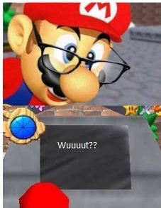
Visibility: 5/5 (main and spinoffs)
Playable: 5/5
Mario is the guy that even non-gamers can pick out in a lineup easily, so it’s a great thing he’s such a law abiding citizen, even getting top billing on a few games where you spend a lot of time playing as other characters first (think the Mario Tennis/Golf Camelot titles). His characterization is typically on guard, nothing too extreme in main series games, though spin-offs can and will try to flesh him out some. He might be super competitive, goofy, a semi-unaware casanova, etc. Outside of his early girlfriend Pauline, the ‘romantic’ connections don’t go beyond a puppy love. Odyssey presenting him as overly romantic towards Peach is, besides fan-fic fuel, more of an anomaly. It’s possible to get in-game dialogue from beyond a ‘Ya-hoo!’, but you have to look close. Interestingly in some old manuals, like Super Mario World or Super Mario Land 2, Mario is a narrator talking to you. His social life involves everyone in the universe knowing who he is.
Well, that’s it for him. It gets more intriguing as we sort through the rest of his buddies.
Peach
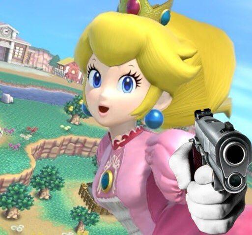
V: 5/5 (main and spin)
P: 1/5 or 2/5 main-series, 5/5 spin-offs
Princess of the Mushroom Kingdom, debuting in Super Mario Bros. 1 and making the franchise so popular due to her less than stellar kingdom defense force. Consequently her visibility is as great as Mario’s, sometimes even getting some appearances that Luigi doesn’t get, yet you often can’t play as her because she’s being held hostage! Or maybe she's just a supporting character. That happens too. She is more recently being revised to be less of a damsel, but being a playable isn't unprecedented, just the slant Nintendo gives it. She incidentally if anything made it in Super Mario Bros 2 because the Doki Doki Panic had the perfect slot for her. Super Princess Peach was a 'girly' game sure, but also legit. In the modern era she can show in 3D world, Super Mario Run (kinda) and Super Mario Wonder, plus more. There weren’t a lot of NES sports games, but she (and Daisy in an early appearance) appeared in NES Open Tournament golf. I liked how in RPGs she either aids her own rescue by being sly, using social engineering, or just fighting like the boys (Super Mario RPG, or Super Paper Mario). Then there's Smash Bros since Melee, lots of side games, etc. Romantically she is unfortunately quite a tease to Mario, but has a healthy social life otherwise. She knows other monarchs (her relationship to Daisy is astroturfed, but I'm counting it and others), has Toads that love her, a ‘grandpa’ that worries sick over her.. Or she used to. (See Tier 2)
Overall, Peach is the main character after Mario himself, almost every conflict, even those divorced from her dealing or kingdom specifically mentioning her anyway. That's a classic trope. Super Mario Bros 3 starts as a Mushroom World conflict, only for her to get kidnapped later. Unlike later N64 era she was your only female character representation, which has of course changed. I won't totally revise her playable rating for main series games, but I’ll add an extra point to reflect what I believe to be her current trajectory.
Bowser
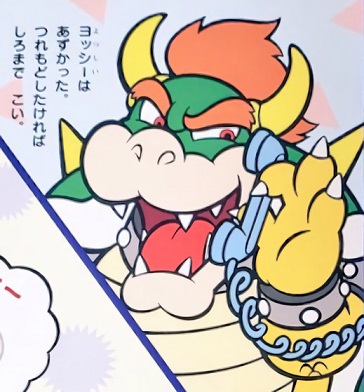
V: 5/5 (main and spin)
P: 1/5 main 4/5 spin
It’s freaking Bowser, the bad guy responsible for most conflicts, even sliding into some that didn't involve him initially. Hijacked by Bowser! Characterization varies between cruel and mean in the main series games where you fight him, or comic reliefy and goofy in some spin-off games where you may or may not play as the Koopa King. He's been in all Mario Karts from the start, but absent as playable from all but the late Mario Parties, as he's the villain in those. Super Mario RPG, Bowser’s Inside Story, and Super Paper Mario let you, but I'm not counting Origami King. Mario Tennis and Golf include him, but not puzzle games. He is a Smash bros character as of Melee.
Ultimately like Peach, his plot related roles restrict him. He's Mario's nemesis, and if we need a bad guy its going to be him unless the game is trying to be subversive. To regularly play as him we'd need either a game from Bowser's POV, which sounds cool actually, or have Bowser help the good guys due to armistice. The latter's what they always pick. There was an interesting interview I read back in the day regarding Super Paper Mario and how they had to think very carefully about if Bowser was to be a good guy going forward. I think that reveals their thinking, and that was involving a spin-off title, so we know what the status quo is for the main games. Super Mario Wonder unabashedly gave us classic Bowser for instance. Different victims of attack of course to free up the Princesses as playable, but same ol antics otherwise.
Luigi
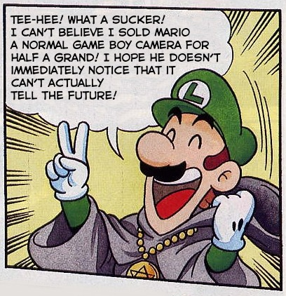
V: 4.5/5 (both)
P: 4/5 main 5/5 spin
This younger leaner Mario brother is another star in main series games. He starts strong, being created for Mario Bros and being the player two option in the early Super Mario Bros games. However, Super Mario 64 or Sunshine omit him completely. Super Mario Galaxy restored him as an end of game unlockable and Galaxy cut to the chase, thank goodness, and just gives us his option, but then in Odyssey he merely cameos! New Super Mario Bros games like to make him only a player two option, as if this is the NES again. For spin-offs relating to sports and recreation he's a guaranteed inclusion, yet for RPGs that aren't Mario and Luigi RPGs and Super Paper Mario he'll pop up only. Paper Mario is often focusing more on its OCs than main guys like Toad (not the npc Toads, The Toad further on this list) and Yoshi, Wario, etc so I accept that reluctantly.
He had to rescue Mario in an education game where Mario went missing. Since the year of Luigi was far off, I suspect it was done as a bit of a gimmick, but it worked. His more acknowledged home series is Luigi’s Mansion, an early GameCube game giving him his own personal villain King Boo. The sequels took a while, but it did root itself eventually and become his official theme of sorts. He got into the first Smash Bros over Peach and Bowser, so give him credit there. The 2013 Year of Luigi was all about pandering to him with a couple extra if derivative games, though he was always going to show up in your favorite Mario Kart, Mario Party, etc.
It's universally accepted that he has more 'personality' than Mario, with dialogue flowing freely and character development during his heroic efforts or life in general. Total fan-fic fuel. His relationship with Daisy is more of a tease deal than anything official, but that's typical. On rare occasions he's dunked on from some jerk Toads or Mario stomping his toes, but that must have been that edgy 00s humor creeping in. I'm kidding. Also, since there's no where else to discuss this, Luigi will sometimes be the 'hard mode' option due to his worser traction. If you master it though his op jumping stat makes him easier than Mario.
In conclusion, as painful as it is to see his spin-off score higher than his main series, not or barely appearing in some very major 3D Mario games hurts that. Still, a fair bet on being playable.
Yoshi
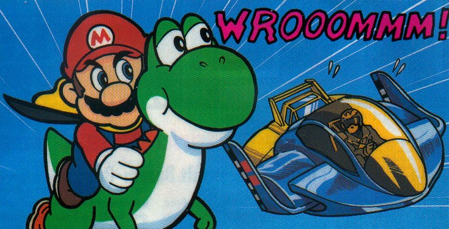
V: 4/5
P: 3/5 main 4.5/5 spin
Yoshi is a frequently appearing supporting character, starting in Super Mario World and imagined even earlier. Sometimes he can speak English, other times, classically perhaps, he's less anthropomorphic and a mount. Because some games present multiple yoshis he has a tiny bit of the ‘composite vs specific’ character conundrum, ala Lakitu, Koopa, Toad, Shy Guy, Birdo, etc, but of this dubious bunch, Yoshi is the biggest name.
Both 3D and 2D main series games flip flop to be succinct. Oddly, he showed in Super Mario 64 and Sunshine when Luigi didn’t. Some modern games feature Yoshi as a ‘easy mode’ option. This association can be annoying. While the Yoshi series adopted colorful kiddie aesthetics of this from the start, the gameplay was legit. Speaking of his franchise, it's been underrated beyond Super Mario World 2: Yoshi's Island. Yoshi's Story dropped all momentum, even when some of the later games aren't bad, just the same story or close enough. His personal nemesis is meant to be Kamek, who we'll talk about in his own entry later. Anyway Yoshi liked to appear or star in earlier puzzle games and has from the start almost shown up in Mario Karts, Parties, sports etc. As a major kid appeal type, visibility is high overall, it's just too bad the playability vacillates.
He can't be in a platform game that isn't Super Mario 64 DS without being restricted to mount duties or how Wonder did it. I suspect his unique gameplay mechanics and balancing that against the plumbers or the Toads is why, but that's not his only problem. RPGs are merely okay for him cameo-wise only, and Paper Mario straight up gives him no direct appearance. (There ARE yoshis in Paper Mario titles but not our T. Yoshisaur..) Overall, Yoshi cheats this a tiny bit. To be generous, his mount only appearances are counted as playable. his legacy and continued support qualifies for tier 1, but being pigeonholed in BOTH main series Mario games and his own franchise chips at a few of his scores if we aren't counting the mount roles.
Toad
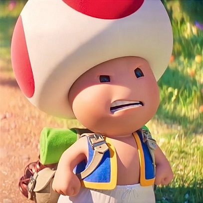
V: 5/5
P: 1.5/5 main, 3/5 spin
Toad? Which Toad?
-The one with the red spots and indigo vest?
-Actually there’s more than one of those too.. Toads are ubiquitous in games starting in Super Mario Bros, which had some neat background on them if subject to retcon now. They are normally docile or cowardly beyond Bucken-Berry and Ala-Gold (Blue and Yellow Toad from New Super Mario Bros Wii onward). Captain Toad was also an exception at least eventually, debuting with his brigade in Galaxy and other 3D games and later getting a spin-off puzzle game. The 'canonical' Toad IS supposedly in Super Mario 3D World, appearing blue as nod to SMB2. (Citation: Mario Wiki: Blue Toad) Spin-off wise Wario’s Woods is a notable early role one might not expect, and he’s always been in Mario Karts. He was the first Mario Party host fittingly, soon replaced by other OCs. His sports game appearances are healthy, usually as a speed character.
Beyond this, it hard to objectively say if we see 'Toad'. RPGs will heavily feature npc Toads, nauseatingly for some in later games, but not a Toad unless a certain one is hanging with Peach. Toad doesn't show in the other character spin-off series short of Luigi's Mansion, though this might fall under plot reasons. Other games like Smash Bros is limited to cameos. Characterization wise, Toads usually have connections to Peach as servants or are involved in the castle somehow. Note that outside media frequently depicted mushroom species that were like Toads if less anthropomorphic, denizens of the Mushroom World in general. Later that was simplified to be Toads again or other species like Koopas and such.
The massive visibility and Peach carrying is what carries him or them or whatever into the first tier. Nintendo recognizes there is indeed a desire to play as (a) Toad, as the so-called canonical one appears in later Mario Parties with alternative hosts taking his role, and main series Mario committed to giving us a blue and yellow one.
Bowser Junior
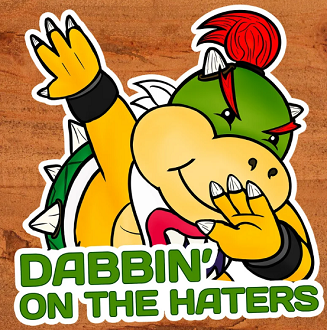
V: 4/5
P: 1/5 main 3.5/5 spin
Bowser Junior debuted in Super Mario Sunshine, a relatively new addition compared to others. As Bowser's canon son, he is a simplified and more focused replacement for the Koopalings. I touch on this more in the Koopaling's entry below, but being a unit of seven makes them less flexible than this tyke, so much so Junior sent them into obscurity. (Sure, Superstar Saga happened but that was from 03, one year after Sunshine. For the rest of that Gamecube era, Junior had definitely taken over.) New Super Mario Bros Wii brought them back, but Bowser Junior is canonically their superior, which still causes some 'Junior fatigue' in dedicated Koopaling fandom. (Thus the image)
Junior is prankster, a mischief maker, and uniquely just as likely to show in modern main series and spin-offs. He is usually used as a mini boss in the platformers (except Odyssey), and has two signature weapons. The Magic Brush from Sunshine is a tiny bit antiquated but still linked closely to him. Junior will commonly use a clown car too, even in Smash Bros or just combine them and have both. He can be found in Gamecube era onward sports games, and some Mario Karts, and Mario Parties after 6 as a replacement for the depreciated Koopa Kids. Paper Mario brought him on as a main villain from Sticker Star onward, same for later Mario & Luigi games. We don't know who his mother is. It's not Peach... Or that's what they want us to think. Not a ton of depth here, but Nintendo has made him a prominent character since creation. For the same reasons as Bowser, he won't be playable in main series games but will often be a package deal if Bowser has made the cut in some spin-off title.
Rosalina
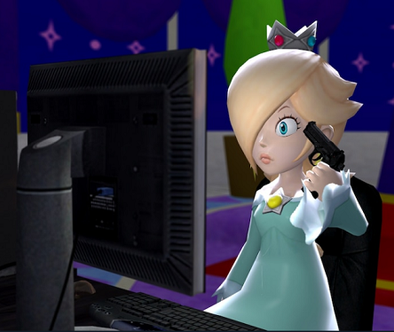
V: 2/5
P: 1/5 main, 2/5 spin
This unique goddess appeared in Mario Galaxy, and with a backstory! And a deranged fanbase too, (just look at her trauma). And we promptly forgot that backstory when we decided we needed a baby version of her!... She does have respectable appearances in modern day spin-offs and is playable in 3D World. She’s been in Mario Kart since Wii and gave Smash Bros yet another Mario rep since 4. Later sports titles will let us play as her graceful self. Still, it’s early to weigh her against some of the heavyweights of the first tier, and she is mostly in side games overall outside of cameos.
Characterization-wise, there was hope here. She has a unique environment, role, and debut. Her trajectory was aiming high, or I thought it was. Not making the cut in Super Mario Wonder was my cue to bump her down a tier. There might have been plot reasons, and I’d hate to penalize a Mario character for having lore that matters, but if other characters could be included for literally no reason she could have at least cameoed.
Daisy
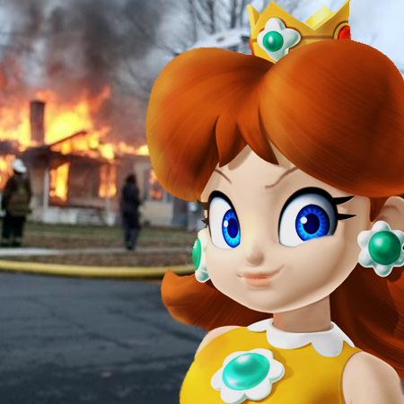
V: 1.5/5 main 4/5 spin
P: 1/5 main, 3/5 spin
Princess of Sarasaland, famous for also being a queen. -Of spin-offs! It is true unfortunately for her, that she was missing without a trace in most main-series games short of the recent Wonder. Spin-offs were and still is her domain for the most part, starting very early with an appearance in NES Open Tournament Golf. She's been 'tough' since Mario Party 3 where she smacks the snot out of Bowser and also made it in N64 Mario Tennis onward. She’s found in later Mario Karts since Double Dash!! And other side games here and there. She’s oft inclined to cameo in some games, but not be of the main cast, like in Smash Bros for instance. Since that NES golf game, she was an ostensible love interest for Luigi, but they’ve not been official. Let’s give her credit for not actually dragging him along either. There’s no life and death rescuing baggage between them, which is refreshing in a way. No, she is not Peach's cousin despite what Prima guides will imply. Her personality is being tomboyish and actiony, more rough on the edges, a foil to Peach. She has good relationships with most and dislikes Waluigi, for good reason.
Rounding up her strong presence in the spin-off games and throwing an extra bone because she made the cut in Wonder, middle of the road is appropriate for now playability wise. Appearance wise she’s of course very popular, even if some of her infamy isn’t her fault.
Wario
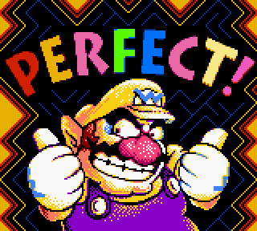
V: 1/5 main, 3 to 4/5 spin
P: 1/5 main, 4/5 spin
This guy started out in a Super Mario Land game then very quickly got a platforming and later micro-game compilation franchise. Mario main-series wise, we’re about as dry as the desert, outside of his first game. Short of Super Mario 64 DS, games where one might think he could be included simply skip over him, the NSMB games, the 3D ones (besides what we just mentioned), everything.
Spin-off wise, we do pretty well from N64 era onward and even before then with him being in puzzle games on the NES and SNES. We should note that he was somewhat of a token ‘bad guy’ you could play as when Bowser wasn’t available, or at times alongside him as another heavy character. As popular as his Wario Land and Wario Ware games are among players, from Nintendo’s standpoint, it’s not necessarily as health. In recent years the games we get with Wario’s badge on them grow thinner unfortunately. Wario Land is to the dismay of many a fossilized franchise since the Wii era, references to such even temporarily removed from Wario’s moveset in Smash Bros. Wario Ware continues to be more relevant with proper releases, a ymmv thing. He is totally absent in RPGs, outside of Mario having his suit via a badge in The Thousand Year Door.
Characterization is very consistent once we get past his first outing, obsessed with money, willing to go far for it, and full of questionable schemes, often with a partner like Waluigi, or stringing along ‘employees’. His rates overall reflect how he’s a game of extremes, not unlike Daisy, except he has his own franchises for extra points in the spin-off categories.
Donkey Kong
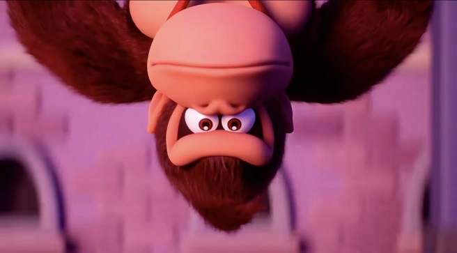
V: 1/5 main. 3 to 4/5 spin
P: 0/5 main, 3/5 spin
Donkey Kong is a crossover character with his own franchise, more distinct than the others even. Since we’re not dissecting Donkey Kong games, this section won’t be long. He doesn’t appear a lot in main-series games, but is frequently in spin-off and spin-off adjacent games, like Donkey Kong (arcade) and Mario vs Donkey Kong. He’s a frequent in sports and recreation, often offering the player a heavy type character without being a bad guy. He thought he could take on Bowser in some Mario Parties, which was unique, except that later he stopped being playable for a while to be a mere ally, an ‘Anti-Bowser’. Thankfully that’s reverted later.
Characterization is being helpful, brawny, and obsessed with bananas. He made it in Smash Bros from the start, but is nowhere to be found in RPGs. Awkwardly being removed as a playable character during a span of Mario Parties and the fact that he didn’t really get some momentum going until N64 era hurt his score.
Koopalings
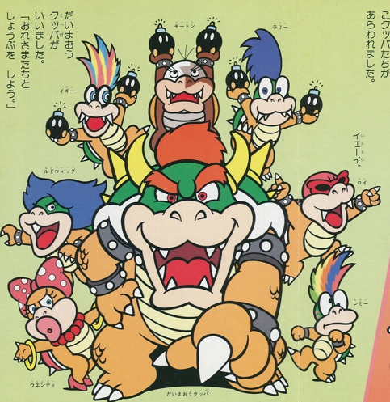
V: 3.5/5 main, 3/5 spin
P: 0/5 main, 3/5 spin
Yes, we’re evaluating them collectively because that’s how Nintendo treats them, a blessing and curse as we’ll see. (See: article) In early Mario times they were major villains for main series games, Super Mario Bros 3, Super Mario World, some spin-offs, plus all of the extended Mario media. Something odd happened later, however. For a personal anecdote, I got into Mario in the early to mid-2000s. I learned of the Koopalings from the Gameboy remakes of some classic platformers and noticed that they weren’t really in any contemporary games, obscureish characters (outside of Superstar Saga), replaced at that time by Bowser Junior already. It would take NSMB Wii to give them all redesigns and mark their official ‘comeback’. Suddenly their inclusion in some spin-offs came off as excessive to ‘haters’ coming out of the woodwork. They can’t win!
Anyway, they are frequent in the later NSMB titles, and even later RPGs, but not the 3D main-series games. Mario Kart 8 makes them playable so they fill the roster, not unlike how the babies do. (And we WILL cover some babies later) They don’t show up in Mario Parties or most sport games. Due to being, erm palette swaps with Bowser Jr, they get to show up in Smash starting in 4. They are cool, distinct characters with a rich history, simply a victim of Nintendo’s evolving goals. In their favor, being historically main-series characters meant that games with enforced stringent casting, such as modern Paper Mario, could use them without delving into OCs.
Their strength are that they have the numbers to occupy the position of world bosses, they are tied to diverse themes, are visually interesting, and you’re bound to have a favorite. Their weakness is that you can’t separate them, so often a single character like Bowser Junior is better logistically. Since it must be said, yes they were Bowser’s kids for at one point (Again see that Mario Oddity article), but somehow he got out of child support later. Well, he is a villain.
Waluigi
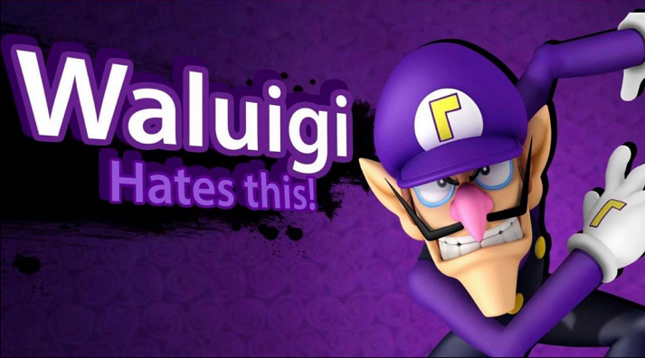
V: 0/5 main 4/5 spin
P: 0/5 main, 4/5 spin
The 'Spin-off King'. Perhaps that’s disparaging to fans, but when we look at the track record he dominates in Mario sports games unambiguously.
He started in Mario Tennis 64 and he's been in Mario Party since three, maybe a little earlier than one might think. Mario Karts, why suddenly vanishing from MK7 was such a big deal, and can show up in spin-offs one wouldn’t expect, like Game and Watch Gallery 4. He has cameos in Smash Brothers since Brawl. His personality is being ill-tempered, competitive (in sports), comical, and memerific apparently to his fans. He’s partnered with Wario, but Nintendo does not want him to be seen as his brother or anything.The fact that Nintendo keeps him away from Wario games is somewhat telling that the relationship is artificially crafted for sports games, and that's a missed opportunity.
Toadette
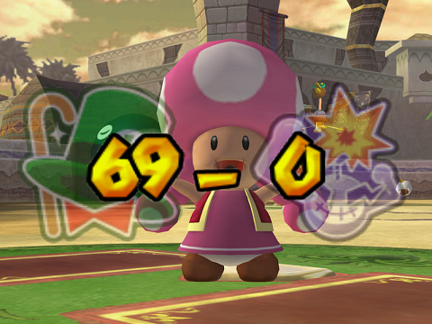
V: 4/5 main, 4/5 spin
P: 2/5 main, 3/5 spin
A female or ostensibly so Toad and mainish side character on the up-and-up in recent years. Her debut is in the 21st century unlike some others, MK:DD (2003), shortly appearing in Paper Mario, Mario Baseball, Mario Party Advance, etc. Was she a future spin-off queen? Possibly until Nintendo started to clamp on side characters more, and Toadette became an acceptable choice for main series titles without being considered an OC. Cue her showing up in a number of the platformers, 2D and 3D.
She can also appear in other RPG games, sports titles, puzzle games with Captain Toad, and Dance Dance Revolution? Her prospects seem healthy, and Super Mario Wonder helped, she’s just not always playable, even in spin-offs. Like with Donkey Kong, she’s been at times taken out of a playable spot in Mario Party to be a host instead. Due to her Super Crown usage in New Super Mario Bros. U Deluxe, she spawned a whole lotta new headcannons for the Mario fandom, so let’s give her that. Her ratings are all over the place, taking into account the age of the character and reflecting her current trajectory.
Toadsworth*
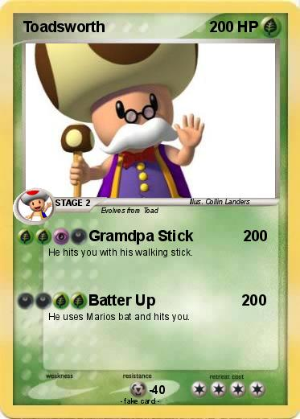
V: 1/5 main, 2/5 spin
P: 0/5 main, 1/5 spin
Another 21th century debut, first appearing in Super Mario Sunshine, an our first depreciated inclusion. Not an old joke I promise. Once a frequent in RPGs, his roles were always minor in the grand scheme of things, mostly around to worry about Peach’s well-being. In other spin-off games he might appear but not be playable outside of the baseball games. In the original NSMB he personally ran the Toad houses and his cane could act as a wand. Some fans in the early 20s suddenly wondered where he went, but his decline started in the 10s if we analyze it more. Gamecube era was both his debut and strongest stand. He’s in a few tennis games, but none of the Mario Karts outside of a cameo, and hosted one Mario Party. Is this a tragedy? Somewhat, but Toadette and the Yellow and Blue Toads are often the better choice since you might get a chance to play as them. Toadsworth’s ONLY playable roles are the two baseball titles and Yakuman DS. He's ran his course it appears.
Baby Mario
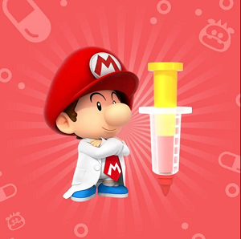
V: 1/5 main. 3/5 spin
P: 0/5 main, 3/5 spin
Thought we were done talking about Mario? Nope! He started in Yoshi's Island, usually the focus of those games but strangely became a spin-off roster filler starting in N64 sports games and later in Double Dash. He's here and there from that point on. Since he's not just a generic character to be thrown anywhere like some we’ll cover later, he doesn't have as many roles outside of Yoshi games as one might think and has dropped off in later years like Toadsworth. Still, because he's so integral to Yoshi games he barely makes the second level cut.
Kamek
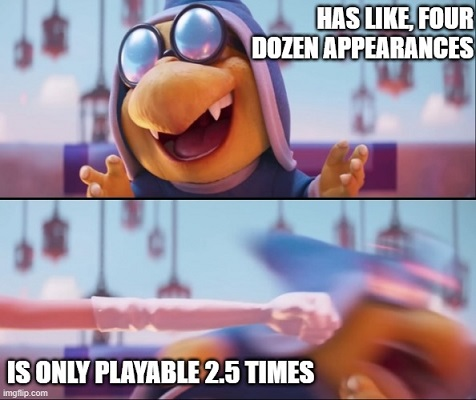
V: 2/5 main. 3/5 spin
P: 0/5 main, 1/5 spin
He's on the up-and-up, sneakily so to be honest. He started strong with his Yoshi's Island association, and has since showed up often in main and spin-offs as a high ranking mook of Bowser. For the 2D games he's a menace, making other bosses harder to fight- at least in theory. 3D games not so much. He can appear in Mario Parties as early as 2 and RPGs, including the Paper Mario games, if replacing poor old Kammy. He used an inverted clause compared to the Koopalings. Where they were dug up from the grave because they were main-series characters, Kamek came from a spin-off series, but was so major there Nintendo could start to use him in main-series stuff. He doesn't really do well in sports games or the Mario Karts aside from beta content, and you hardly ever play as him, Tetris Attack, Mario Party 9, and a brief moment of Paper Mario: Origami King being out odd ones out (or in if you're a fan).. While we don't count movies here, he did appear in the modern day movie, so that further reinforces his throne as top baddie. (That isn't Bowser Junior)
Birdo
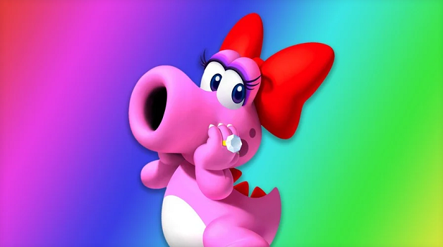
V: 1/5 main, 4/5 spin
P: 0/5 main, 3.5/ spin
Miss Birdo (early ‘Catherine’) had an early villainous main role in Super Mario Bros 2, but has been ‘good’ since, showing up in lots of spin-off games. Some are odd. Wario’s Woods? Sure. Super Mario RPG? Sure. Later Paper Mario? Sure. More predictably they’ll appear in sports games, Mario Kart starting with Double Dash!! and Mario Parties to diversify the roster. No we aren’t using the ‘they’ pronoun to be cute, there are multiple Birdos as can be seen in a few games. Unlike the Toads, she hasn’t been mass produced in a factory though, so to her credit it is much easier to think of only one ‘Birdo’. Sometimes she’s considered a pseudo partner to Yoshi, if arbitrarily because they are some sort of dinosaur. Look into it, they don't every cross paths outside of spin-offs. Anyway, this character has some rich history, even cameoing in non-Mario games, an underrated spin-off queen.
Blue and Yellow Toad
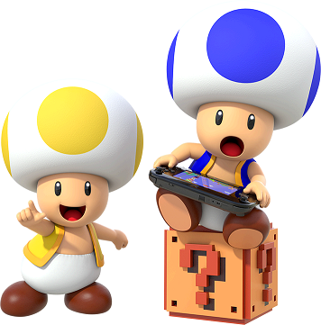
V: 4/5 main, 3/5 spin
P: 3/5 main, 1/5 spin
Modern inventions, so we’ll take that into account here. Bucken-Berry and Ala-Gold were created to give us a player three and four slot in NSMB Wii. Their strong presence in main-series 2D platformers propels them into the third tier, even if for purely mechanical reasons. They aren’t in 3D games, but being reasonable again, those tend to only feature Mario and/or Luigi anyway. (The blue Toad in 3D World is not Bucken-Berry but Toad, remember that.)They notably give us a bizzarro world situation where the spin-off rating is weaker. They merely cameo in other games, if somewhat commonly, meaning that we must be careful tagging any yellow and blue Toads as them. Nothing super distinct about them, nonetheless they are just as capable of rescuing Peach as a Mario brother, and being an option in those main-series games has given them some genuine fans.
Diddy Kong
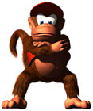
V: 1/5 main, 2/5 spin
P: 0/5 main, 2/5 spin
Created to be an ‘extra hit’ for Donkey Kong in the then upcoming Donkey Kong Country series, he would be a tier one from DK’s perspective, but here not so much. He’s a spin-off character, and not quite a king of it either. He was never in any Mario games until the Gamecube era. His trajectory got stronger then throughout the Wii era, besides appearing in sports games and Mario Karts, getting into Smash Brothers. He has rarely been in Mario Parties for some reason. He is a cool character, but lacking the grandfather clause Donkey Kong has, he’s firmly in the third tier.
Nabbit
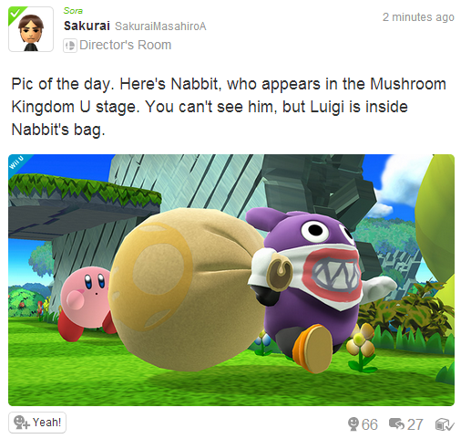
V: 2.5/5 main, 2/5 spin
P: 1/5 main, 1/5 spin
Yes, per Super Mario Bros. Wonder, this mysterious figure made the cut. We’re trying to not be super antidotal here, but it’s plain lazy how they ruined what would be an otherwise original design with a copy of Bowser Junior’s mask. Anyway, he started out as a sneaky guy in New Super Mario Bros WiiU, typically related to some gimmick, and he still is today, except playable in Main series stuff and spin-offs, if as an 'easy mode' with Yoshi. (See his entry) In spin-off games he’s like the baddies category in a way, except legitimately a distinct character. He made it in one RPG but is cameo central otherwise. He barely has dialogue outside of Mario and Sonic at the Olympics 2016, meant to be a familiar face on the sidelines or a mechanical device for the 2D platformers.
Baddies
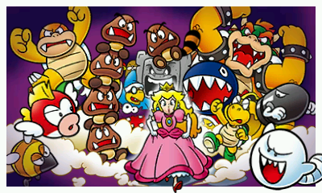
V: 5/5 main, 5/5 spin
P: 0/5 main, 4/5 spin
Lakitus, Goomba, Shy Guy, Hammer Bro, Koopa, Dry Bone, Boo: Frequent generic enemies sometimes put in games as playable extras or at the least cameos. This goes far back. Koopa and Dry Bones get elevated because they are more likely to show in Mario Kart, Koopa being an original racer. Dry Bones is more spotty but still common enough. Lakitu is always around just rarely playable, same for hammer bro. Shy Guy is often around but his ability to be played as is sometimes weirdly restricted like in Mario Kart DS where he's only for versus play. These characters are convenient for Nintendo to throw here and here, sometimes even fill what you’d think would be very limited slots, such as in Mario Party games, and have zero backstory to lead to restrictions.
King Boo
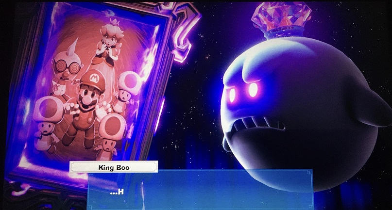
V: 1/5 main, 3/5 spin
P: 0/5 main, 1/5 spin
Luigi's personal villain coming from Luigi's Mansion, later something of a break out character. He’s in the third tier due to his importance to Luigi, but he can definitely show outside of those games. While Super Mario Sunshine has in recent times been discredited as a main-series appearance of his, he definitely is inserted into Super Mario 63 DS, plus he’s playable in some Mario Karts and the baseball games. Other spin-offs and even RPGs can feature him in an unplayable state, often as a boss. This gives him something of a Bowser situation except with less exposure, as in many games there’s a plot reason to not give you control over him, or it might simply be too awkward due to his, yes, size! Still, he’s menacing, a true threat, and has his fans.
Baby Luigi
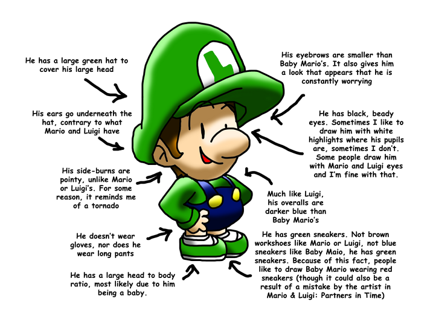
V: 1/5 main, 1.5/5 spin
P: 0/5 main, 1/5 spin
Think Baby Mario but in distress. While he's not in the N64 games, everywhere else he's wherever his brother is. He's like Peach in that being the person you have to rescue means you can't use him in the platformers. Mario and Luigi: Partners in Time lets you control him though, but as a package deal with B. Mario. Same for the Mario Karts, the baseball games, and a few other sports. That's really all he does, and that’s too bad. Baby Mario being more central and having some appearances he doesn't puts him a tier above. Oh, and photo credits: BabyLuigiOnFire.
Petey Piranha
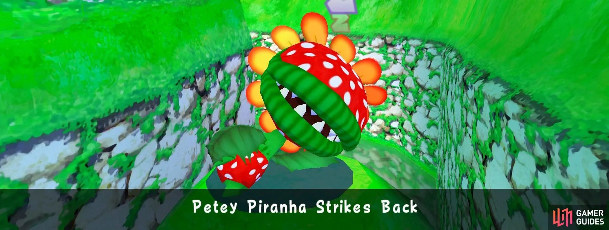
V: 1/5 main, 2.5/5 spin
P: 0/5 main, 1.5/ spin
Petey debuted in Sunshine, was a boss in the first NSMB and for a while was a semi-frequent spin-off addition. He could appear in just about anything, Super Princess Peach, Mario and Luigi RPGs, or even Smash Bros. Since he’s a main-series character, we see later Paper Mario pull him (or an expy of him) out of nowhere to appear as a boss, twice even. He showed up in sports for a while, his first playable roles in Toadstool Tour and Double Dash!! Generally, especially later, he’s not one to be playable outside of Mario Kart and baseball. Not unlike King Boo, later Mario Parties will grab him to be a boss also. He almost always has to be antagonistic, allowing him to appear often but be unplayable, and his size can’t be consistent ever. Still, he has a lot of range for a distinct non-generic character, though apparently his gender is up to debate. Well, we dodged that topic once already and we will again here.
RPG characters and bosses
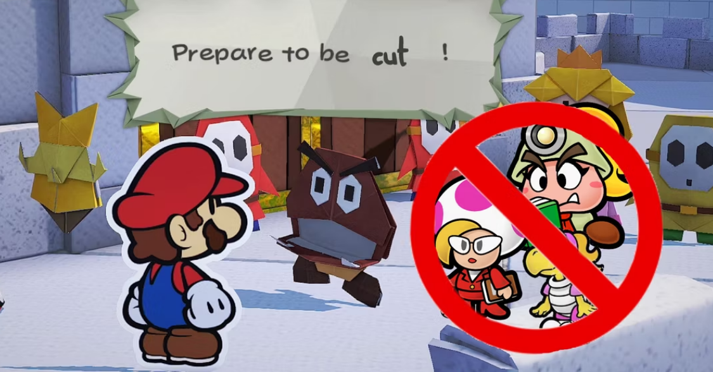
Fawful and others. We don’t dissect them too much, often being recurring characters in those franchises, but never outside it.
Professor Elvin Gadd
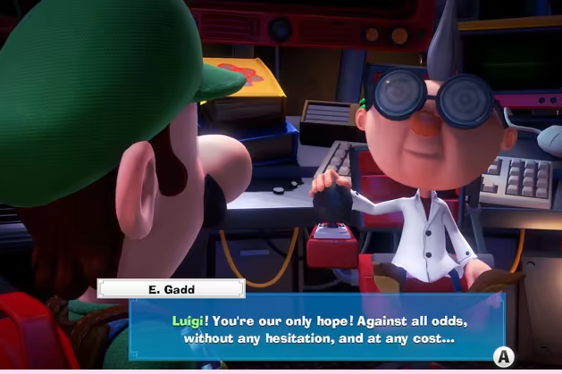
While he was created for Luigi’s Mansion, he was treated as a go-too professor character to pull for other games, some RPGs, even Mario Party 6. This is not counting the references to his inventions in many more games, like confusingly (at least I always felt) Super Mario Sunshine. From an American standpoint his roles did have a pretty big gap from Partners in Time in 2005 to Luigi's Mansion Dark Moon in 2014, but he's recovered some since had plenty of nods in the meantime. He would have been in Mario Kart DS, one of the more interesting things.
Pauline
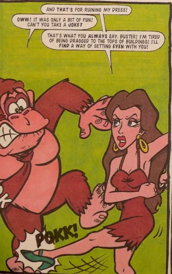
Mario's original girlfriend before the whole Mushroom Kingdom thing. Wasn’t she strictly from the normal world? That has to be awkward. She's in Donkey Kong and logically the Gameboy remake, then our girl went into stasis until Mario vs Donkey Kong. Her true comeback was Mario Odyssey as mayor of New Donk City, yes main-series, followed by getting to appear as a playable character in Mario Karts, Tennis, other sports. She shows up in the modern day movie. What a turnaround. A true go-getter! I’d have voted for her too. Actually not. I’m afraid of flying taxis.
Metal Mario
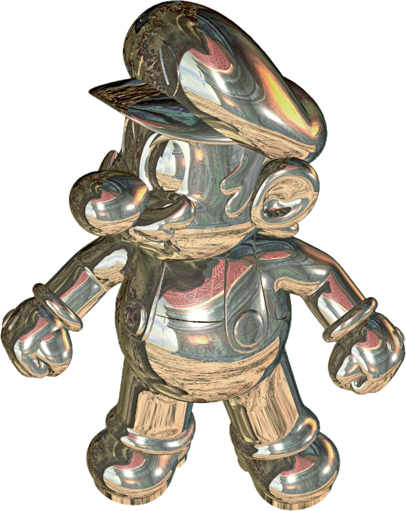
Why are we reviewing a power up? Silly you, this is a completely original character according to Nintendo. So are we going to credit SM64 as a first showing, or is that person still regular ‘Mario’? Smash Bros make it clear his a different person with him being an antagonistic for some reason mini boss. Mario Golf has him unlockable along with some other sports titles, so the trend goes back farther than some might think. He's a boss in Dr. Mario 64 and a clone option in later Mario Karts starting with 7. Oddities with him include nonsensical phrases and a distorted voice. He also inspired Pink Gold Peach, which is just downright scary. Be aware that that's not why he's ranked so low, this isn't about my opinions after all, he just has a game track record you can count on your fingers. Overall he's a strict utility character, as in you get to use a power character with the frame of a normal one. Neat?